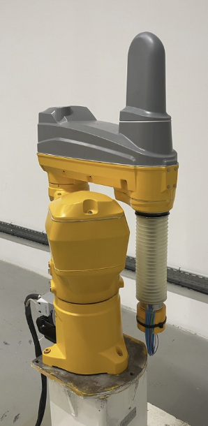
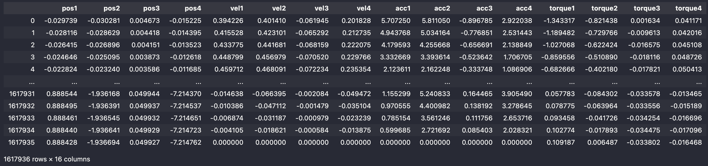
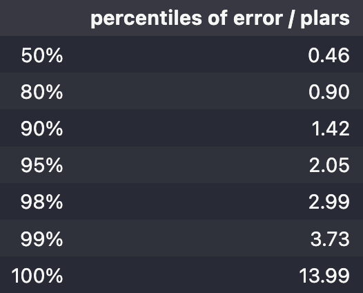
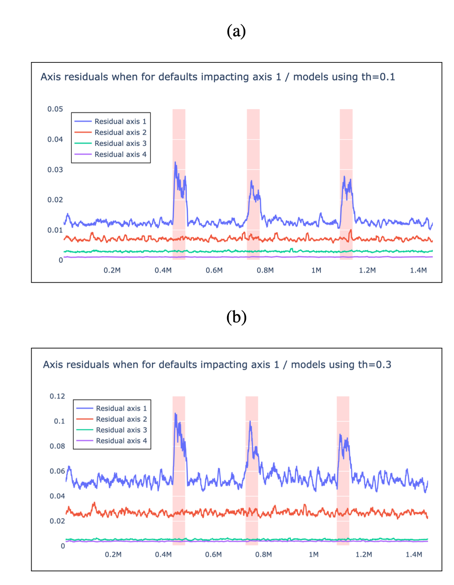

Piece-wise polynomial invariants
Using pwpol to design invariants for robot manipulators
1 The dataset
We dispose of a dataset containing the recordings of the angular positions, velocities and accelerations of the four links as well as the associated applied torques1.
From the measurements dataframe shown below, it can be seen that there are 16 columns (12 of which are used as features) which are those linked to the kinematic variables (three for each link). The remaining four columns stand for the torque at the four links.
The dataset contains 1,617,936 rows.


2 Train/Test split
The following script splits2 the dataset into train and test subsets:
test_size = 0.95
nTrain = int((1-test_size)*len(df_robot))
dfTrain = df_robot.iloc[0:nTrain]
dfTest = df_robot.iloc[nTrain:]3 Fitting an invariant using pwpol
Recall that the objective of the pwpol module is to find a set of multivariate polynomials (here polynomials of \(12\) variables), say \(P_i\), \(i=1,\dots,n_r\) such that one gets a small residual of the following form:
\[ e = \min_{i=1,\dots,n_r}\left\vert y-P_i(x)\right\vert \]
over the samples contained in the training dataset.
The following script sets some of the search parameters (leaving the remaining ones to their default values) and calls the fitting function fit_pwp_models accordingly:
from pwpol import fit_pwp_models, plot, DIC_ARGS
from time import time
# Choose which columns to use as features
colX = [c for c in dfTrain.columns if 'torque' not in c]
# and which is to be used as label y
coly = 'torque1'
# Download the default values dictionary
dic_args = DIC_ARGS
# and change some of its entries:
dic_args.update(dict(
df=dfTrain,
colX=colX,
coly=coly,
th=0.2,
deg=1,
window=200
))
t1 = time()
model, _ = fit_pwp_models(**dic_args)
print(f'cpu={time()-t1:3.2f} sec')Notice that the script above attempts to fit a piece-linear relationship (deg=1) with a threshold 0.2 in the sense of the following acceptability criterion to adopt a polynomial in the set of useful ones:
\[
\dfrac{\texttt{percentile}(y-\hat y, 95)}{\texttt{median}(\vert y\vert )}\le \texttt{th}
\] Notice however that the value of the threshold \(\texttt{th}\) is first set to the corresponding argument of the dic_args used in the call of the fit_pwp_models but it might be increased after a given number of failures, this explains the following log content where the final percentile needed a higher value of the threshold.
The previous script produces the following output:
Treated 0% | #rows= 80896 | #models = 0 | #coeffs = 0, | th=0.200
Treated 36% | #rows= 51856 | #models = 1 | #coeffs = 6, | th=0.200
Treated 54% | #rows= 37623 | #models = 2 | #coeffs = 18, | th=0.200
Treated 69% | #rows= 25240 | #models = 3 | #coeffs = 29, | th=0.200
Treated 80% | #rows= 16748 | #models = 4 | #coeffs = 37, | th=0.200
Treated 90% | #rows= 8495 | #models = 5 | #coeffs = 45, | th=0.200
Treated 95% | #rows= 4651 | #models = 6 | #coeffs = 51, | th=0.200
Treated 97% | #rows= 2798 | #models = 7 | #coeffs = 59, | th=0.200
Treated 99% | #rows= 845 | #models = 8 | #coeffs = 66, | th=0.200
Treated 100% | #rows= 14 | #models = 9 | #coeffs = 77, | th=1.032
cpu=101.75 secThis log shows provides, among others, the following facts:
- The solution has been found in less than two minutes
- The solution involves \(n_r=9\) models
- The total number of monomials (non zero coefficients) is equal to 77.
4 Validation of the solution
In order to validate the fitted solution, we need to use the piece-wise relationship in order to predict the residual on the test sub-dataset.
Since the training dataset is only 5% of the whole data, we simply predict the residual on the whole dataset while showing the training region by a shaded area.
This is done in the following script:
from pwpol import predict
# set the true value
ytrue = df_robot[coly]
# predict the closest output of the polynomials
Ypred, ypred, per_e = predict(df_robot, model, options=dict(y=ytrue))
# plot the result
fig = go.Figure()
t = np.arange(0, len(ytrue))
fig.add_trace(go.Scatter(x=t, y=ytrue, name='True'))
fig.add_trace(go.Scatter(x=t, y=ypred, name='predicted'))
# ... some other plotting instructions for the shaded region
# and the title ...
fig.show()Performing zoom operations on the figure above enable to better appreciate how small the residual is with only \(9\) linear multivariate polynomials involving 77 coefficients.
5 Precision vs sparsity
Now what if we increase the precision threshold from \(\texttt{th}=0.2\) to \(\texttt{th}=0.3\). This would obviously leads to less precise matching but might reduce the complexity of the invariance relationship.
This indeed materializes in the output of the process that is reported hereafter:
Treated 0% | #rows= 80896 | #models = 0 | #coeffs = 0, | th=0.300
Treated 53% | #rows= 38086 | #models = 1 | #coeffs = 7, | th=0.300
Treated 73% | #rows= 22556 | #models = 2 | #coeffs = 14, | th=0.300
Treated 88% | #rows= 10178 | #models = 3 | #coeffs = 20, | th=0.300
Treated 95% | #rows= 4389 | #models = 4 | #coeffs = 28, | th=0.300
Treated 99% | #rows= 1584 | #models = 5 | #coeffs = 36, | th=0.300
Treated 100% | #rows= 463 | #models = 6 | #coeffs = 46, | th=0.300
cpu=62.25558400154114Now we get a relationship involving only \(n_r=6\) polynomials instead of \(9\) before and only \(46\) monomials instead of \(77\) in the previous setting.
Obviously, by examining the plot below, it is possible to see that the precision is slightly impacted although it remains quite decent. The appropriate tuning is obviously problem-dependent.
The inverse process can be also attempted by reducing the threshold to \(\texttt{th}=0.1\) seeking a more precise residual which leads to the following results:
Treated 0% | #rows= 80896 | #models = 0 | #coeffs = 0, | th=0.100
Treated 19% | #rows= 66267 | #models = 1 | #coeffs = 8, | th=0.100
Treated 32% | #rows= 55029 | #models = 2 | #coeffs = 14, | th=0.100
Treated 43% | #rows= 46530 | #models = 3 | #coeffs = 22, | th=0.100
Treated 57% | #rows= 35048 | #models = 4 | #coeffs = 31, | th=0.100
Treated 68% | #rows= 26354 | #models = 5 | #coeffs = 41, | th=0.100
Treated 79% | #rows= 17625 | #models = 6 | #coeffs = 50, | th=0.100
Treated 81% | #rows= 15649 | #models = 7 | #coeffs = 58, | th=0.100
Treated 85% | #rows= 12697 | #models = 8 | #coeffs = 71, | th=0.100
Treated 87% | #rows= 10701 | #models = 9 | #coeffs = 81, | th=0.100
Treated 89% | #rows= 9045 | #models = 10 | #coeffs = 89, | th=0.100
Treated 90% | #rows= 8128 | #models = 11 | #coeffs = 100, | th=0.100
Treated 92% | #rows= 7156 | #models = 12 | #coeffs = 110, | th=0.100
Treated 93% | #rows= 6143 | #models = 13 | #coeffs = 118, | th=0.120
Treated 94% | #rows= 5284 | #models = 14 | #coeffs = 129, | th=0.144
Treated 95% | #rows= 4273 | #models = 15 | #coeffs = 139, | th=0.173
Treated 97% | #rows= 3115 | #models = 16 | #coeffs = 149, | th=0.249
Treated 98% | #rows= 2162 | #models = 17 | #coeffs = 158, | th=0.249
Treated 99% | #rows= 1068 | #models = 18 | #coeffs = 167, | th=0.430
cpu=101.70363187789917An easier comparison between the three setting can be obtained by looking at the percentile of normalized error (ratio to the median of the absolute value of the target) for the different values \(\texttt{th}=0.1, 0.2, 0.3\). The same results are also shown for an indentification of a single \(3\)rd order polynomial via the plars module introduced in the dedicated section:

pwpol.
plars module.The comparison inside the piece-wise polynomial solutions shows the relevance of the precition threshold \(\texttt{th}\) inside the pwpol module.
On the other hand, the comparison between these solutions and the single polynomial solution clearly highlights the high relevance of the piece-wise polynomial structure in capturing the tighter relationship keeping in mind that one solution is implicit and hence serves only for residual definition while the other is explicit and hence induce prediction power.
Notice that the residuals for the solution with \(\texttt{th}=0.2, 0.3\), respectively obtained using 77 and 46 coefficients are much smaller than the single polynomial associated residual depsite the fact that the latter is obtained using 125 coefficients.
6 Further readings
A deep comparison has been recently proposed in (Alamir & Clavel (2025)) between the piece-wise multi-variate polynomial approach offered by the pwpol module and the well known GRU-DNN model. The comparison is done in terms of:
- The residual precision
- The complexity of the model
- The computation time
The comparison shows that
smaller residuals can be obtained
with drastically lower number of active parameters (few hundred compared to several hundred of thousands for DNN)
and a computation time that never exceeds two minutes against several hours for the DNN version
Moreover, it has been shown using some synthetic defaults (alsmost difficult to see in the raw data) that the residual generator is able not only to detect the anomaly/default but also to tell which axis it seems to be originated from.
This is shown in the following figures3:


It is important to keep in mind that contrary to the implicit piece-wise relationships provided by the pwpol module, the GRU-DNN version provides an explicit predictor of the torque which is much more difficult to achieve.
This unerlines the difference between the two solutions and enables to understand why the results provided by pwpol show smaller residuals.
Notice however that as far as the anomaly detection is targeted, the implicit/explicit nature of the relationship does not really matter which makes the comparison relevant depsite of the difference in nature between the two classes of models.